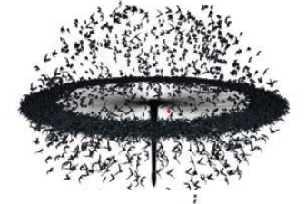
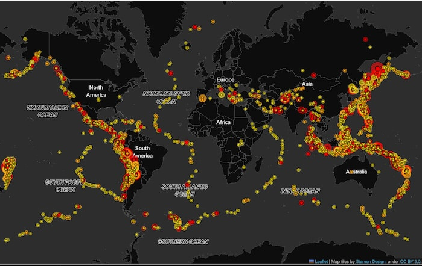

Κεντρική ιδέα της εργασίας μας είναι η δημιουργία ενός προσωπικού, δημιουργικού μοντέλου για την κατανόηση του σεισμικού φαινομένου. Δεν στοχεύουμε στην πρόβλεψη, αλλά στη διερεύνηση ενός φυσικού μηχανισμού που υπερβαίνει τη στατικότητα της κλασικής αναπαράστασης. Σχεδιάσαμε έναν διαδραστικό παγκόσμιο χάρτη, ο οποίος απεικονίζει σεισμογενείς περιοχές και επιτρέπει την ενεργή συμμετοχή του χρήστη. Επιλέξαμε πέντε πόλεις με έντονο σεισμικό παρελθόν —Αθήνα, Πόλη του Μεξικού, Άγκυρα, Σαντιάγκο και Τόκιο— και τις σημειώσαμε στον χάρτη με κόκκινες κουκκίδες. Ο χρήστης, επιλέγοντας κάθε πόλη, μεταφέρεται σε ένα νέο περιβάλλον όπου παρουσιάζονται πληροφορίες για την τοποθεσία και έναν χαρακτηριστικό ιστορικό σεισμό. Παράλληλα, προβάλλεται η προσομοίωση της συμπεριφοράς ενός αντιπροσωπευτικού κτιρίου της εποχής κατά τη διάρκεια του συγκεκριμένου σεισμού, αναδεικνύοντας τις επιπτώσεις στο δομημένο περιβάλλον. Μέσα από αυτή την προσέγγιση, το έργο μας λειτουργεί ως εργαλείο κατανόησης της σεισμικής συμπεριφοράς στο χρόνο και στον χώρο. Ο χρήστης έχει τη δυνατότητα να συγκρίνει τις συνέπειες των σεισμών σε πόλεις με διαφορετικά γεωγραφικά, πολιτισμικά και αρχιτεκτονικά χαρακτηριστικά, ενισχύοντας τη συνειδητοποίηση της σύνδεσης ανάμεσα στο φυσικό φαινόμενο και τις ανθρώπινες κατασκευές.
Βασική έμπνευση για την εργασία μας αποτέλεσε το βιβλίο “Form + code in design, art, and architecture”, καθώς και από ερεύνες επιστημόνων που μελετούν φυσικά φαινόμενα. Το βιβλίο, ειδικά στο κεφάλαιο “Simulation” περιέχει πολλαπλά παραδείγματα οπτικοποίησης φυσικών φαινομένων και δυναμικών χαρτών. Βρήκαμε ιδιαίτερα ενδιαφέρουσα την ιδέα να ασχοληθούμε με κάτι απρόβλεπτο, με τον σεισμό και να το οπτικοποιήσουμε. Επιπλέον, εφόσον παράλληλα μελετούμε το φαινόμενο του σεισμού στο μάθημα της δομικής μηχανικής 2, αποτέλεσε κι αυτό σημαντική πηγή έμπνευσης. Μαθαίνουμε πως ταλαντώνεται ενα κτίριο όταν υπόκειται σε σεισμό και συνδυάζοντας τις γνώσεις μας από τη δομική και την πληροφορική, καταλήγουμε στην απεικόνιση με springs. Τέλος, αντλήσαμε έμπνευση και από την έννοια της παραμετρικοποίησης, την οποία δουλεύουμε στη διάρκεια του έτους. Πέρα του ότι είναι ένα βοηθητικό εργαλείο, αποτελεί έμπνευση για την δημιουργία ενός πλήρους λειτουργικού σεισμικού μοντέλου.
 